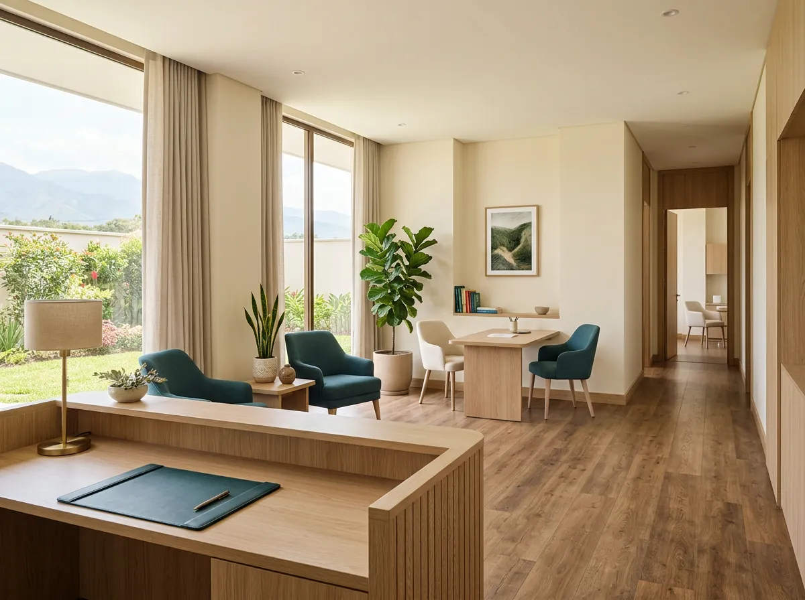

01
Emergencias Médicas 24/7
Atención médica de urgencia las 24 horas, todos los días, en Pasaje.
- Triage clínico y atención inmediata sin cita
- Sala de observación y estabilización
- Manejo de traumatismos, suturas y curaciones
Tu salud y la de tu familia en Pasaje
Atención médica integral, emergencias las 24 horas y servicios de diagnóstico avanzado en un solo lugar. Más de 18 años al cuidado de nuestra comunidad en Pasaje, El Oro.
Desde 2007 brindando salud confiable y cercana a las familias de Pasaje y la provincia de El Oro.
Servicios ambulatorios, hospitalarios y de diagnóstico con tecnología moderna y un equipo dedicado a tu recuperación.
Atención médica de urgencia las 24 horas, todos los días, en Pasaje.
Medicina general, pediatría, ginecología y especialidades clínicas con un trato humano y personalizado.
Procesamiento automatizado de análisis clínicos para acompañar el diagnóstico médico oportuno.
Estudios de Rayos X de alta nitidez y ecografía especializada para evaluaciones precisas.
Quirófanos equipados para procedimientos programados y de urgencia con estrictas normas de bioseguridad.
Salas y habitaciones cómodas pensadas para la pronta recuperación del paciente bajo supervisión continua.
Conoce qué nivel de atención requiere tu cuadro para recibir el cuidado adecuado sin demoras.
Situaciones agudas que ponen en riesgo la vida, la integridad o causan dolor intenso repentino. Acude de inmediato o llama a nuestra guardia.
Atención preventiva, seguimiento clínico y evaluación de síntomas leves o crónicos coordinando fecha y horario conveniente.

Desde nuestra fundación en 2007, hemos crecido de la mano con las familias de nuestra provincia, modernizando nuestras instalaciones para brindar soluciones médicas efectivas y oportunas.
Entendemos que detrás de cada consulta hay una historia y un anhelo de tranquilidad. Por eso combinamos equipamiento diagnóstico con una atención cálida, donde te escuchamos y te acompañamos con genuina vocación médica.
Conoce al equipo médico y de guardia que acompaña a nuestros pacientes con vocación, ética y cercanía.
Aquí se presentarán los médicos y especialidades reales de la clínica, con su foto y horario de atención.
Solicitar citaContamos con áreas clínicas estructuradas para garantizar un entorno estéril, funcional y reconfortante.
Acceso rápido para ambulancias y vehículos, sala de reanimación y triage con monitoreo permanente.
Espacios privados y confortables equipados con instrumental de diagnóstico para una atención cálida y personalizada.
Equipos de química sanguínea y hematología automatizados que reducen tiempos de espera y maximizan la precisión.
Tecnología de imagen digital con menor radiación y alta resolución para visualización inmediata en pantalla.
Área quirúrgica con flujo de aire filtrado, monitores de signos vitales, electrobisturí y mesa quirúrgica moderna.
Camas hospitalarias ergonómicas, aire acondicionado, baño privado y acompañamiento de enfermería las 24 horas.
Prepara los datos de tu solicitud en menos de un minuto. Podrás enviar tu consulta directamente por WhatsApp o llamar a nuestra recepción para confirmar la fecha y hora exacta.
La opinión y satisfacción de las familias de Pasaje y El Oro son nuestro mayor compromiso.
Aquí se mostrarán opiniones reales de pacientes, por ejemplo las de Google Maps.
Respuestas claras a las dudas más comunes antes de tu visita a Clínica San Marcos.
Sí. Nuestro servicio de emergencias médicas atiende las 24 horas, todos los días.
Para la mayoría de exámenes metabólicos (glucosa, colesterol, triglicéridos) se recomienda un ayuno de 8 a 12 horas previas. Puedes beber agua simple. Para exámenes específicos, consúltanos al 07 291 3916.
¡Claro que sí! Puedes completar el formulario en la sección "Agenda tu visita" de esta página y hacer clic en "Enviar por WhatsApp", o escribir directamente a nuestra recepción.
Se recomienda presentar la cédula de identidad del paciente. Si cuentas con exámenes previos, recetas o carnet de vacunas en niños, llévalos para enriquecer la valoración médica.
Aceptamos pagos en efectivo, transferencias bancarias directas (Banco Pichincha, Banco de Guayaquil, etc.) y tarjetas de crédito o débito. Emitimos facturación electrónica detallada.
Sí. Si el médico en consulta o urgencias requiere un estudio radiográfico o ecográfico, se coordina de inmediato en nuestra área de imagenología para que no tengas que trasladarte.
Estamos en un punto céntrico y de fácil acceso dentro de la ciudad de Pasaje, provincia de El Oro. Pulsa el botón de Google Maps para abrir la ruta en tu teléfono.
Visítanos en nuestras instalaciones o comunícate directamente con recepción.
Clínica San Marcos · Pasaje, El Oro
Orientación general de la clínica. En caso de emergencia grave acude de inmediato a Urgencias o llama al 07 291 3916 / ECU 911.
Clínica San Marcos · Pasaje, El Oro. No compartas datos personales confidenciales ni historias clínicas por este canal.